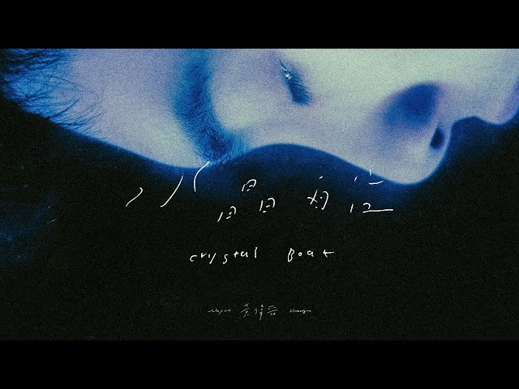
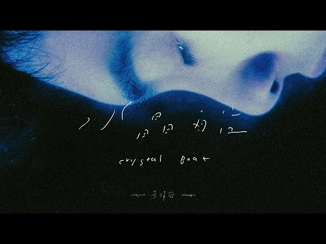
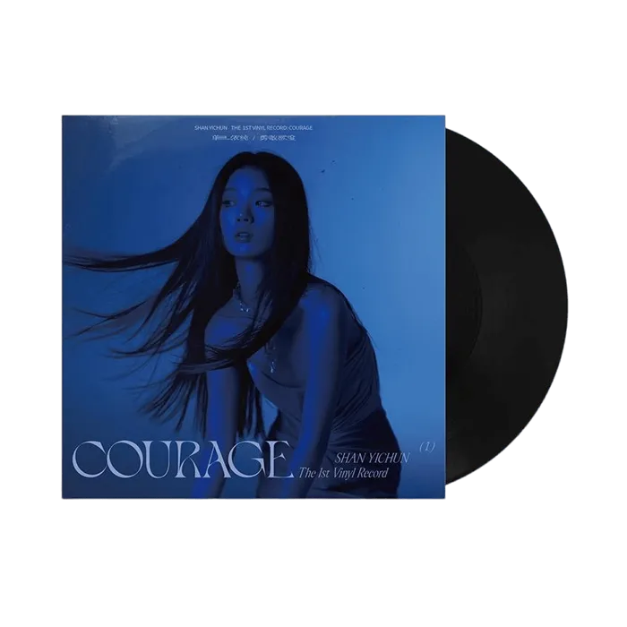
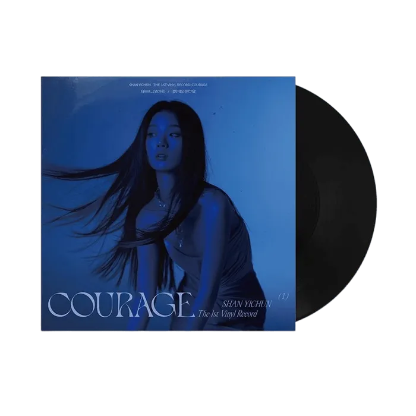

經歷
實習經歷
好咖文創：開發、提案組
在大一下時選修了一門微短劇的前期整合與拍攝計畫課程，課程結束後獲得在好咖文創工作室暑期實習的機會，目前負責撰寫活動企劃。
2025 Jun. - Now
社團經歷
Clubs
-
咖啡拉花社
國中三年都待在咖啡拉花社並擔任社長，拉花是節奏緩慢、專注當下的過程，是很好的紓壓方式。
-
康輔社
高一參加康輔社透過團康遊戲，學會合作、臨場反應，在快樂的兩堂課裡，讓回憶成為收穫。
-
韓文社
高二想學韓文，從語言延伸到韓國的飲食、音樂、舞蹈等，能夠增進文化理解。
-
氣球社
在高三課業最繁忙的一年，透過折氣球讓一顆顆繽紛的造型氣球治癒生活。
我的氣球作品
-
世新大學資傳系學會
大二擔任第29屆系學會會長，統整整體會務、領導團隊，規劃年度活動，學習如何在團隊中有效溝通。
比賽經歷
高二選修專題實作
高二時選了一堂營建科的選修專題，動手做出了一個河岸景觀設計，為期五個月的準備讓我在木橋設計競賽中取得不錯的成績，也藉由這堂課參加了自主學習成果發表競賽等，為我的高中生涯增添不同的色彩。
我的專題成果2023 Jan. - 2023 Mar.
特殊經歷
2019年英荷比法遊學
國中時就讀私立校，每年都會有出國遊學的機會，國一時在父母的支持下一個人跟著學校開啟了一段歐洲之旅，當時的我雖然學了很久的英語但仍然一竅不通，也是從那時候我才下定某種決心要好好讀書。
我的遊學歷程2019 Jun. - 2019 Jul.
 

 
